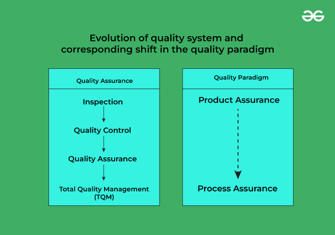

1.12 Software Quality (General)
Software quality means how good and reliable a product is. Traditionally, quality was defined as "fitness of purpose" — the product does what users need. For physical goods (cars, fans) this is often sufficient. For software, fitness of purpose alone is incomplete.
Example: Software may meet all functional requirements in the SRS but have an unusable interface — functionally correct but not high quality. Another product may meet requirements but have unmaintainable code — again, not high quality.
Factors of software quality
- Portability: The software works in different environments and can operate with other related products.
- Usability: Both expert and novice users can invoke the software's functions easily.
- Reusability: Software modules can be reused in new products to reduce development effort.
- Correctness: The requirements stated in the SRS are properly implemented in the final product.
- Maintainability: Errors can be corrected and features can be added or modified easily over time.
- Reliability: The software has fewer failures because it is thoroughly tested and faults are handled properly.
- Efficiency: The software makes minimal use of CPU, memory, disk, and network bandwidth.
Software Quality Management System (SQMS)
Methods used to develop products with desired quality include quality system activities such as project auditing and review of the quality system itself.
Evolution of quality management

- Inspection: Products are inspected directly as a basic form of quality control (QC).
- Quality control (QC): Defective items are detected, and the causes of defects are found and corrected.
- Quality assurance (QA): Defined processes are used to build good quality products, including security checks.
- Total Quality Management (TQM): All procedures are continuously improved through regular process measurements.
Q: Why is "fitness of purpose" an incomplete definition of software quality? Explain the evolution of quality management.
Model answer points:
- Fitness of purpose is incomplete because it ignores other important factors such as usability, maintainability, and efficiency.
- The answer should give a counter-example, such as software that is functionally correct but unusable or unmaintainable.
- The evolution of quality management should be explained as Inspection, then QC, then QA, and finally TQM, with a brief explanation of each stage.
MCQ (GATE CS 2015): An SRS document should avoid discussing — (C) Design Specification (SRS describes what, not how).
MCQ (UGC-NET 2015): Error → fault → failure chain — (C) Error leads to fault and fault leads to failure.